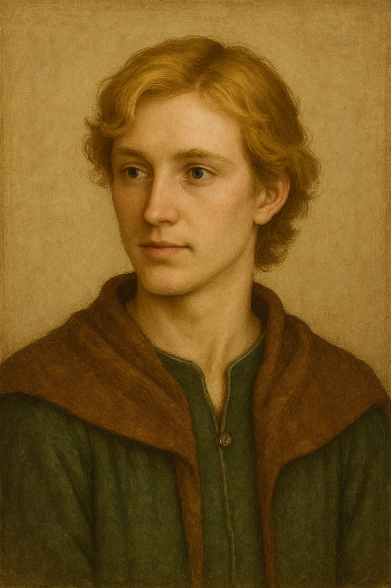

Robert Ogle
Eye Color: Azure Blue
Hair Color: blonde
Skin: PALE
Build: MEDIUM/THIN
Demeanor: DEVOUT/SENTIMENTAL
Birth: 1281
Age 1281: newborn
Age 1298: 17
Predominant Location: Ogle/Whalton
Motifs: Marion devoted, foil to Rob Bertram

Annabella Selby Ogle
Eye Color: sky blue
Hair Color: /LIGHT BROWN
Skin: PALE
Build: MEDIUM/THIN
Demeanor: MOTHERLY
Birth: 1255
Age 1281: 26
Age 1298: 43
Predominant Location: Ogle/Whalton
Motifs: Fate